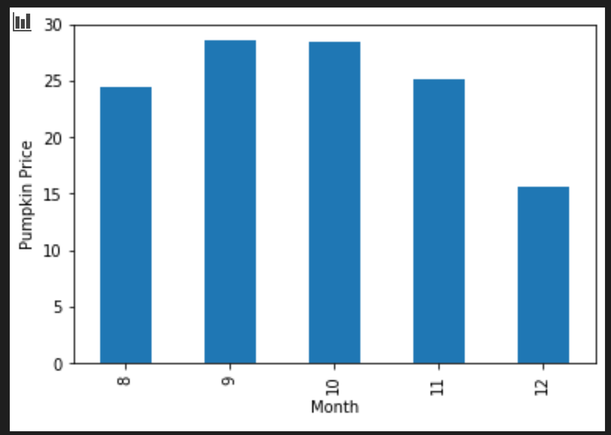

使用 Scikit-learn 构建回归模型：准备和可视化数据⚓︎

课前测⚓︎
介绍⚓︎
既然你已经设置了开始使用 Scikit-learn 处理机器学习模型构建所需的工具，你就可以开始对数据提出问题了。当你处理数据并应用ML解决方案时，了解如何提出正确的问题以正确释放数据集的潜力非常重要。
在本课中，你将学习：
- 如何为模型构建准备数据。
- 如何使用 Matplotlib 进行数据可视化。
对你的数据提出正确的问题⚓︎
你提出的问题将决定你将使用哪种类型的 ML 算法。你得到的答案的质量将在很大程度上取决于你的数据的性质。
查看为本课程提供的数据。你可以在 VS Code 中打开这个 .csv 文件。快速浏览一下就会发现有空格，还有字符串和数字数据的混合。还有一个奇怪的列叫做“Package”，其中的数据是“sacks”、“bins”和其他值的混合。事实上，数据有点乱。
事实上，得到一个完全准备好用于创建 ML 模型的开箱即用数据集并不是很常见。在本课中，你将学习如何使用标准 Python 库准备原始数据集。你还将学习各种技术来可视化数据。
案例研究：“南瓜市场”⚓︎
你将在 data 文件夹中找到一个名为 US-pumpkins.csv 的 .csv 文件，其中包含有关南瓜市场的 1757 行数据，已按城市排序分组。这是从美国农业部分发的特种作物终端市场标准报告中提取的原始数据。
准备数据⚓︎
这些数据属于公共领域。它可以从美国农业部网站下载，每个城市有许多不同的文件。为了避免太多单独的文件，我们将所有城市数据合并到一个电子表格中，因此我们已经准备了一些数据。接下来，让我们仔细看看数据。
南瓜数据 - 早期结论⚓︎
你对这些数据有什么看法？你已经看到了无法理解的字符串、数字、空格和奇怪值的混合体。
你可以使用回归技术对这些数据提出什么问题？“预测给定月份内待售南瓜的价格”怎么样？再次查看数据，你需要进行一些更改才能创建任务所需的数据结构。
练习 - 分析南瓜数据⚓︎
让我们使用 Pandas，（“Python 数据分析” Python Data Analysis 的意思）一个非常有用的工具，用于分析和准备南瓜数据。
首先，检查遗漏的日期⚓︎
你首先需要采取以下步骤来检查缺少的日期：
-
将日期转换为月份格式（这些是美国日期，因此格式为
MM/DD/YYYY）。 -
将月份提取到新列。
在 Visual Studio Code 中打开 notebook.ipynb 文件，并将电子表格导入到新的 Pandas dataframe 中。
-
使用
head()函数查看前五行。import pandas as pd pumpkins = pd.read_csv('../../data/US-pumpkins.csv') pumpkins.head()✅ 使用什么函数来查看最后五行？
-
检查当前 dataframe 中是否缺少数据：
pumpkins.isnull().sum()有数据丢失，但可能对手头的任务来说无关紧要。
-
为了让你的 dataframe 更容易使用，使用
drop()删除它的几个列，只保留你需要的列：new_columns = ['Package', 'Month', 'Low Price', 'High Price', 'Date'] pumpkins = pumpkins.drop([c for c in pumpkins.columns if c not in new_columns], axis=1)
然后，确定南瓜的平均价格⚓︎
考虑如何确定给定月份南瓜的平均价格。你会为此任务选择哪些列？提示：你需要 3 列。
解决方案：取 Low Price 和 High Price 列的平均值来填充新的 Price 列，将 Date 列转换成只显示月份。幸运的是，根据上面的检查，没有丢失日期或价格的数据。
-
要计算平均值，请添加以下代码：
price = (pumpkins['Low Price'] + pumpkins['High Price']) / 2 month = pd.DatetimeIndex(pumpkins['Date']).month
✅ 请随意使用 print(month) 打印你想检查的任何数据。
-
现在，将转换后的数据复制到新的 Pandas dataframe 中：
new_pumpkins = pd.DataFrame({'Month': month, 'Package': pumpkins['Package'], 'Low Price': pumpkins['Low Price'],'High Price': pumpkins['High Price'], 'Price': price})打印出的 dataframe 将向你展示一个干净整洁的数据集，你可以在此数据集上构建新的回归模型。
但是等等！这里有点奇怪⚓︎
如果你看看 Package(包装)一栏，南瓜有很多不同的配置。有的以 1 1/9 蒲式耳的尺寸出售，有的以 1/2 蒲式耳的尺寸出售，有的以每只南瓜出售，有的以每磅出售，有的以不同宽度的大盒子出售。
南瓜似乎很难统一称重方式
深入研究原始数据，有趣的是，任何 Unit of Sale 等于“EACH”或“PER BIN”的东西也具有每英寸、每箱或“每个”的 Package 类型。南瓜似乎很难采用统一称重方式，因此让我们通过仅选择 Package 列中带有字符串“蒲式耳”的南瓜来过滤它们。
-
在初始 .csv 导入下添加过滤器：
pumpkins = pumpkins[pumpkins['Package'].str.contains('bushel', case=True, regex=True)]如果你现在打印数据，你可以看到你只获得了 415 行左右包含按蒲式耳计算的南瓜的数据。
可是等等！ 还有一件事要做⚓︎
你是否注意到每行的蒲式耳数量不同？你需要对定价进行标准化，以便显示每蒲式耳的定价，因此请进行一些数学计算以对其进行标准化。
-
在创建 new_pumpkins dataframe 的代码块之后添加这些行：
new_pumpkins.loc[new_pumpkins['Package'].str.contains('1 1/9'), 'Price'] = price/(1 + 1/9) new_pumpkins.loc[new_pumpkins['Package'].str.contains('1/2'), 'Price'] = price/(1/2)
✅ 根据 The Spruce Eats，蒲式耳的重量取决于产品的类型，因为它是一种体积测量。“例如，一蒲式耳西红柿应该重56 磅……叶子和蔬菜占据更多空间，重量更轻，所以一蒲式耳菠菜只有20磅。” 这一切都相当复杂！让我们不要费心进行蒲式耳到磅的转换，而是按蒲式耳定价。然而，所有这些对蒲式耳南瓜的研究表明，了解数据的性质是多么重要！
现在，你可以根据蒲式耳测量来分析每单位的定价。如果你再打印一次数据，你可以看到它是如何标准化的。
✅ 你有没有注意到半蒲式耳卖的南瓜很贵？你能弄清楚为什么吗？提示：小南瓜比大南瓜贵得多，这可能是因为考虑到一个大的空心馅饼南瓜占用的未使用空间，每蒲式耳的南瓜要多得多。
可视化策略⚓︎
数据科学家的部分职责是展示他们使用的数据的质量和性质。为此，他们通常会创建有趣的可视化或绘图、图形和图表，以显示数据的不同方面。通过这种方式，他们能够直观地展示难以发现的关系和差距。
可视化还可以帮助确定最适合数据的机器学习技术。例如，似乎沿着一条线的散点图表明该数据是线性回归练习的良好候选者。
一个在 Jupyter notebooks 中运行良好的数据可视化库是 Matplotlib（你在上一课中也看到过）。
在这些教程中获得更多数据可视化经验。
练习 - 使用 Matplotlib 进行实验⚓︎
尝试创建一些基本图形来显示你刚刚创建的新 dataframe。基本线图会显示什么？
-
在文件顶部导入 Matplotlib：
import matplotlib.pyplot as plt -
重新刷新以运行整个 notebook。
-
在 notebook 底部，添加一个单元格以绘制数据：
price = new_pumpkins.Price month = new_pumpkins.Month plt.scatter(price, month) plt.show()
这是一个有用的图吗？有什么让你吃惊的吗？
它并不是特别有用，因为它所做的只是在你的数据中显示为给定月份的点数分布。
让它有用⚓︎
为了让图表显示有用的数据，你通常需要以某种方式对数据进行分组。让我们尝试创建一个图，其中 y 轴显示月份，数据显示数据的分布。
-
添加单元格以创建分组柱状图：
new_pumpkins.groupby(['Month'])['Price'].mean().plot(kind='bar') plt.ylabel("Pumpkin Price")
这是一个更有用的数据可视化！似乎表明南瓜的最高价格出现在 9 月和 10 月。这符合你的期望吗？为什么？为什么不？
🚀挑战⚓︎
探索 Matplotlib 提供的不同类型的可视化。哪种类型最适合回归问题？
课后测⚓︎
复习与自学⚓︎
请看一下可视化数据的多种方法。列出各种可用的库，并注意哪些库最适合给定类型的任务，例如 2D 可视化与 3D 可视化。你发现了什么？
任务⚓︎
创建日期: November 22, 2023